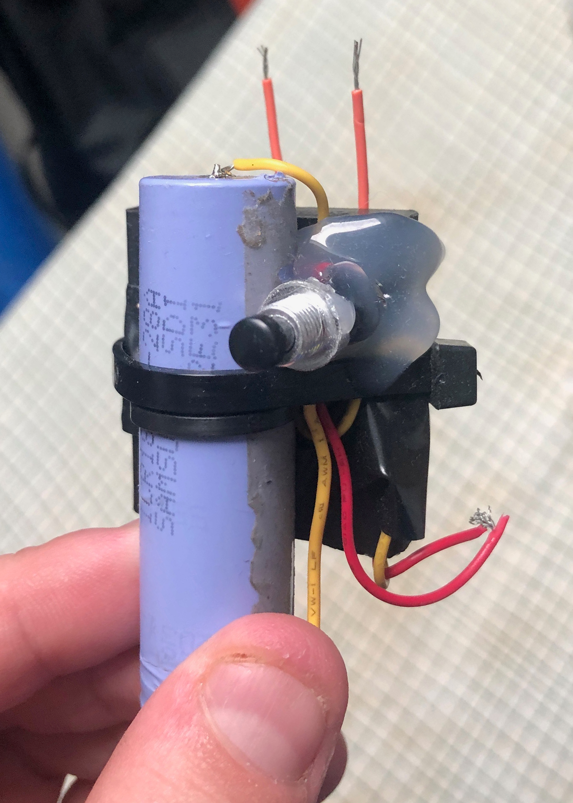

Mystery of the High Voltage Generator
Summary
One day whilst working on some solid modelling, a package from China came across my desk with no discernible or obvious origin, other than the fact that it was addressed to me. Inside were 10 black boxes with 4 wires attached to each. It was peculiar to say the least. Thinking nothing of it, I filed it away on the shelf for future evaluation. Months later, I grabbed the box, and spent some time trying to figure out what they were. I come to find out that they were portable, high voltage generators!
Method:
- Probed contacts and took resistance readings
- Googled keywords of “black box, 4 wires”
- Attempted to search for Chinese characters indicated on side to no avail
- Returned back to the multimeter and voltage analysis
- Surmised that the red and yellow leads could be related to a power source
- Set up power supply with low current cut-off, connected leads to power supply, dial up current limit slowly, and was pleasantly surprised by a brilliant ignition spark
Following this adventure, I made it into a hand held high voltage generator.
Photos
 Fig. 1: A quick little hand taser I whipped together using a single 18650 cell, and a button. Has ~2cm spark at maximum, so about ~60kV estimated performance. (30kV/cm for air)